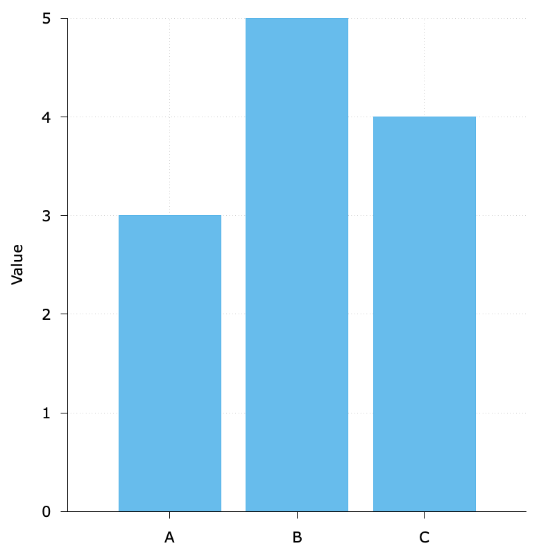

Introduction
A data visualization first and foremost has to accurately convey the data. It must not mislead or distort. If one number is twice as large as another, but in the visualization they look to be about the same, then the visualization is wrong. At the same time, a data visualization should be aesthetically pleasing.
For example, 3D plotting is often considered as a bad choice because it may distort the data.

This figure above is from Guidelines on Graphics. As we can see, the relative sizes in a 3D-pie-chart are very strongly distorted.
Ugly, bad, and wrong figures
To generate a reasonable visualization with no major flaws:
$data << EOD
A 3
B 5
C 4
EOD
unset key
set border 3
set tics out nomirror
set style data histogram
set grid
set style fill solid 0.9
set yrange [0:5]
set ylabel 'Value'
set boxwidth 0.8
plot $data u 2:xtic(1) with boxes fc '#56B4E9'
The default background grid line is good enough, so I did not specify its style. By the way, luckily I think it would be in fact hard to plot such bad, ugly, and wrong figures given the default settings with gnuplot.